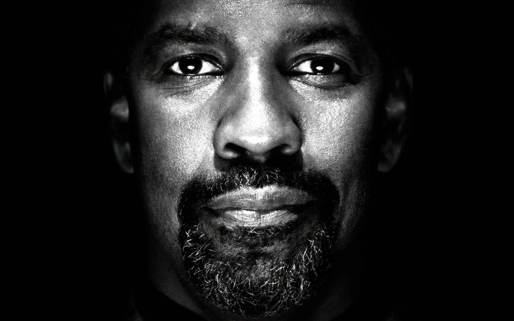

Celebrating the Life and Career of an Iconic Actor
Denzel Washington's journey in the world of entertainment began on the stages of Off-Broadway productions. From those early days, he swiftly rose to prominence, captivating audiences with his undeniable talent and presence. Key milestones include his breakout role as Steve Biko in "Cry Freedom" (1987) and the unforgettable portrayal of Private Trip in "Glory" (1989), earning him his first Academy Award for Best Supporting Actor. Continue exploring the timeline to witness the evolution of a true cinematic legend.
Denzel Washington's filmography is a testament to his versatility and acting prowess. Some of his most iconic roles include:
Explore the diverse characters brought to life by Denzel and delve into the cinematic brilliance that defines his illustrious career.
Denzel Washington's talent has been widely recognized with numerous awards, including:
Discover the accolades that reflect his exceptional contributions to the world of film and acting.
Beyond his contributions to the entertainment industry, Denzel Washington is known for his philanthropic efforts. He has been actively involved in causes related to education, equality, and social justice. Explore the impact of Denzel's commitment to making a positive change beyond the silver screen.
Immerse yourself in the wisdom and inspiration of Denzel Washington through a collection of his most profound quotes.